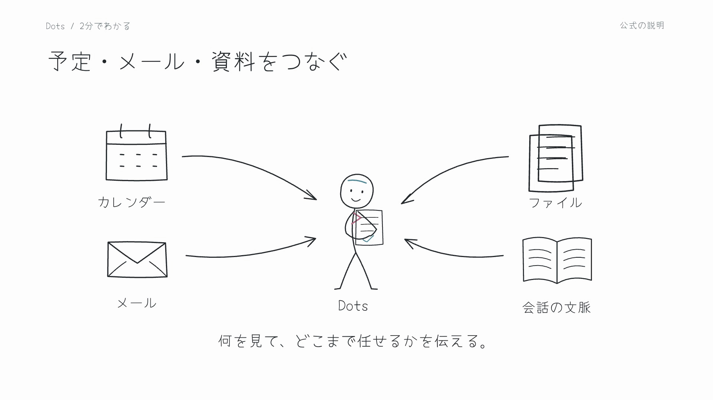
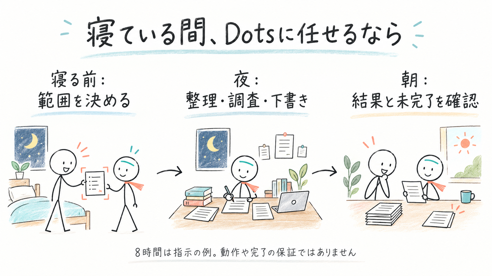

世界のDotsの使い方を見つけ、ページの中でプロンプトをコピーし、ひとつ試してみるためのノートです。やってみた結果や自分向けの工夫を持ち寄り、みんなで育てていきます。まだ使えるか分からない案も、面白そうなら残します。
外部の投稿・GitHub・YouTubeから、2026年10月3日時点で32件を収集しました（X・GitHub 27件、YouTube 2本から5件）。この32件のおけもん自身による動作検証は、これからです。原投稿、紹介記事の埋め込み、動画の実演、GitHubの提案・不具合報告を区別しています。
おけもんはこんなふうに使っている
10月3日(土)おけもん実践記は、当日の本人とDotのやり取りを日付と確認範囲を分けて記録しました。
実施日を照合中の実践10例を読む。この10例は10月3日の実績数に含めません。
スクショからの予定変更、ランチ予約、SNSの下書き、移動中の音声、夜間の作業整理など。再構成した会話例と、真似できる頼み方を掲載しました。予約まで完了した例、下書きまでの例、接続で止まった例を、それぞれ区別しています。
まず、2分でDotsを知る

おけもんの依頼を受けてCodexが制作。手書きの人物が動く120秒の紹介動画です。SpaceにもMP4本体を保存しました。製品の実画面ではなく、使い方を説明する図です。
気になったものを、ひとつ試す
下のコードブロックのコピーを押して、自分のDotsへ貼り付けられます。「公開プロンプト原文」と「この事例集用の例」を区別しました。日付や対象の仕事を、自分の状況に合わせてください。
寝ている間の8時間を任せる

pajiさんが2026年10月1日に「寝る前Dotsにこれ頼むと最高」と紹介した文面を、10月3日に原投稿で確認しました。頼んだ範囲の残タスクを進め、入力待ちは保留し、朝に完了・未完了を報告してもらう使い方です。
最初の準備：対象の案件や会話を見られるようにし、すでに任せてよい範囲を伝えます。自分のPCを使う作業は、PCの接続状態にも依存します。8時間は投稿者の指示の例で、必ず8時間動き続ける、すべて完了するという保証ではありません。
公開プロンプト原文（外側のかぎ括弧だけ除去）
これから8時間就寝しますので、各セッションの残タスクを、これまでの依頼・承認の範囲で自律的に進め、利用可能なゴール設定やDotsの定期確認で停止した未完了セッションを再開し、行き詰まったら別の解決方法へ切り替え、私の入力待ちは保留して他の作業を進め、重要な変化だけ通知し、8時間後に完了事項・残タスク・保留理由を報告してください
朝に見るもの：完了したこと、まだ残ること、本人の判断が必要なこと。成果物へのリンクと一緒に確かめます。
商談30分前に準備レポート
チャエンさんが公開した「コピペ用プロンプト」です。元の投稿の次にある返信を展開し、全文を確認しました。
最初の準備：Googleカレンダーと、使いたいメール・Slack・CRMを接続します。接続していない情報は取得できません。最初は次の商談1件で、会社や相手の情報が合っているか確かめると試しやすくなります。
公開プロンプト原文（外側のかぎ括弧だけ除去）
Googleカレンダーの社外商談を確認し、開始30分前に準備レポートをこのチャットへ届けて。接続済みのメール・Slack・CRM（Salesforceなど）と公開情報を使い、会社概要、相手の近況、当社との契約・過去のやり取り、直近ニュース、当日の確認事項を短く整理。出典を添え、不明点は推測せず明記。社内会議・キャンセル済み予定は除外して
確認するもの：情報の日付、相手の会社・名前、契約ややり取りの出典、まだ不明な項目。相手への連絡文を作る場合は、送る前に内容を確認します。
はじめてなら、明日の予定を3件だけ
以下は、この事例集用におけもん側で作成した例です。投稿者の原文ではありません。
まず1回だけ試します。明日（日本時間）の予定と、私が見てよいと伝えた未返信の連絡を確認してください。
重要そうなものを3件まで選び、何の準備が必要か、出典リンクと一緒に教えてください。
読めない情報は「未確認」と書いてください。送信や予定の変更は、私が内容を確認してからにしてください。
試したら残すこと：使った接続、うまくいった点、期待と違った点、直したプロンプト。個人情報や非公開の仕事の内容は、共有するメモから除いてください。
YouTubeで使い方を見る
KEITOさん — メール整理からSpace作成まで
ChatGPTに24時間働く新機能『Dots』登場！【OpenAI DevDay 2026まとめ】
KEITO【AI&WEB ch】、2026年9月30日公開。約46分。日本語の自動字幕全文を確認しました。Dotsの活用は主に前半です。
| 見たい使い方 | その場面へ | 紹介される内容 |
|---|---|---|
| 請求メールを整理 | 7:29から | Gmailの領収書・請求書を見つけ、月別のExcelへまとめる依頼。 |
| Web更新を見張る | 11:09から | コミュニティの更新内容を知らせてもらう仕事。 |
| 企画をSpaceに貯める | 11:54から | YouTube企画用Spaceと、10月分のネタのページを作る依頼。 |
この動画は「どんな仕事を渡せるか」を考える入口に向いています。請求書の継続集計や後日の通知まで成功したことを示す記録としては扱っていません。
まず真似するなら：企画用のページを1枚作るところから。次の文はこの事例集で作った例で、動画内プロンプトの原文ではありません。
Spaceに「来月の発信ネタ」というページを作ってください。
今この会話にあるアイデアだけを使い、題材・誰に届けたいか・伝えたいこと・まだ調べることを表にしてください。
材料が足りない欄は空欄のままにして、あとから私と書き足せるようにしてください。
Sharbel A. — 説明資料と先回りの提案
OpenAI Just Launched Dots. Here's The Truth About It.
2026年9月30日公開、約12分。英語の自動字幕全文を確認しました。
こちらは発売直後の使用感を知りたいときに。動画中の評価や利用条件は当時の話として読み、現在の仕様は公式で確かめます。
寝ている間の8時間運用は、この2本では確認できませんでした。その使い方は上のpajiさんの原投稿を出典にしています。
みんなで書き足すには
Spaceでは、ページの閲覧・コメント・編集の権限を選べます。編集権限のある人は、見つけた使い方や試した結果を書き足せます。共有を始めるときは、公開してよい情報と元のURLを添えてください。利用できる共有方法はアカウントによって異なります。
Xで見つけた使い方
| 使い方 | 内容 | 出典と確認範囲 | プロンプト |
|---|---|---|---|
| 商談30分前の準備 | 会社情報・直近ニュース・メール・Slackを商談前に整理したという体験談。 | チャエン · 原投稿確認 | 原文を上に掲載 |
| 音声でメールとSlackを処理 | スマートフォンとイヤホンで約45分話しながらメールとSlackを処理したという報告。 | Riley Brown · 原投稿確認 | 原文は未確認 |
| 夜間のバグ調査と複数案件 | 一晩のバグ確認や複数案件の進行、学校からのメールへの気づきを紹介。 | toli · 原投稿確認 | 原文は未確認 |
| ほかのエージェントの進行管理 | プロジェクトの目標を渡し、ほかのエージェントの進み具合を見る使い方。 | Alex Finn／紹介記事 · 紹介記事の埋め込み確認 | 原文は未確認 |
| 一晩で分析用の実験室 | VulcanBench Decision Labを一晩で作ったという紹介。 | Morgan Linton／紹介記事 · 紹介記事の埋め込み確認 | 原文は未確認 |
| 音声で考えを出し続ける | スマートフォンからその日に浮かんだ考えを話して蓄積する例。 | Vaibhav／紹介記事 · 紹介記事の埋め込み確認 | 原文は未確認 |
| Slackの設計相談からタスクへ | Slack上の設計の話からLinearの作業と販促画像につなげる例。 | Malay Vasa／紹介記事 · 紹介記事の埋め込み確認 | 原文は未確認 |
| 頼んだままの仕事を拾う | Slack・GitHub・メールから忘れていた依頼を見つける例。 | 入江／紹介記事 · 紹介記事の埋め込み確認 | 原文は未確認 |
| Slackから制作と公開を頼む | Slackで依頼して制作と公開へつなげるという紹介。 | Studio Yebisu／紹介記事 · 紹介記事の埋め込み確認 | 原文は未確認 |
| Three.jsで焚き火を制作 | Three.jsを使う焚き火作品の制作例。 | Hajime Tsui／紹介記事 · 紹介記事の埋め込み確認 | 原文は未確認 |
| CSVから支出を見える化 | CSVの支出データを扱う道具を作った例。 | ゆーや／紹介記事 · 紹介記事の埋め込み確認 | 原文は未確認 |
| Dotsの会話UIを工夫 | デスクトップのDots会話・スレッドUIを工夫する紹介。 | かし子／紹介記事 · 紹介記事の埋め込み確認 | 原文は未確認 |
| SitesとMCPの接続準備 | SitesでのMCP設定を進める例。 | ぶんかい／紹介記事 · 紹介記事の埋め込み確認 | 原文は未確認 |
| 声で売上グラフを作る | 音声の依頼から売上グラフを作るという紹介。 | 鈴木／紹介記事 · 紹介記事の埋め込み確認 | 原文は未確認 |
| 報告や返金期限への気づき | 報告や返金期限などを先回りして知らせる例。埋め込みの可視範囲のみ確認。 | Angel／紹介記事 · 紹介記事の埋め込み確認 | 原文は未確認 |
| 予定の整理 | 予定管理の紹介。詳細な条件は原投稿を再確認してから試す。 | Gabriel Chua／紹介記事 · 紹介記事の埋め込み確認 | 原文は未確認 |
| イベント準備での行き違い | DevDayの座席調整での行き違いや意図しないメッセージの報告。 | Max Rubin／紹介記事 · 紹介記事の埋め込み確認 | 原文は未確認 |
| 許可した夜間作業 | 就寝中の8時間、承認済み範囲の残タスクを進め、入力待ちは保留し、朝に完了・未完了・保留理由を報告させる公開指示。 | paji · 原投稿確認 | 原文を上に掲載 |
| 一晩のレビューと記録 | 夜間にレビューを進めて記録を残す例。 | Maki／紹介記事 · 紹介記事の埋め込み確認 | 原文は未確認 |
GitHubの活用案と関連実装
| 使い方 | 内容 | 出典と確認範囲 | プロンプト |
|---|---|---|---|
| 週次の案件サマリー | PR・Issue・Slackや関連ノートをまとめ、進捗と詰まりをリンク付きで整理する提案。 | VoltAgent · README確認・提案段階 | 原文は未確認 |
| リリース前の準備確認 | 未完の変更、チェック結果、プレビュー、説明書を見比べる提案。 | VoltAgent · README確認・提案段階 | 原文は未確認 |
| 顧客の声から改善候補 | フィードバックをテーマ別にまとめ、重複を除いてIssue候補を下書きする提案。 | VoltAgent · README確認・提案段階 | 原文は未確認 |
| 定期的な調査の見張り | 指定した情報源を再訪し、変化・食い違い・根拠の弱さを日付付きで記録する提案。 | VoltAgent · README確認・提案段階 | 原文は未確認 |
| 会議から次の作業へ | 議事録から決定・担当・期限を取り出し、案件の状況と合わせる提案。 | VoltAgent · README確認・提案段階 | 原文は未確認 |
| 自分で動かすAI同僚の土台 | テキスト・通話・Slack・作業用PCを備える自前運用のテンプレート。OpenAI公式Dotsとは別製品。 | CopilotKit · README確認 | 原文は未確認 |
困った事例も残す
| 使い方 | 内容 | 出典と確認範囲 | プロンプト |
|---|---|---|---|
| 停止表示中に入力できなくなる | Dotsの停止表示と実行状態が食い違い、入力不能になった利用者報告。再起動で復旧したとの追記あり。 | kfiramar · Issue本文確認 | 原文は未確認 |
| クラウド作業の見え方の差 | Dots経由と利用者が作ったクラウド作業で、端末ごとの一覧表示や続きを送れるかが異なるという報告。 | lee64579 · Issue本文確認 | 原文は未確認 |
このノートの育て方
毎日、日本語と英語のX・GitHubを調べ、出典URLと発見日を付けて追記します。似た話は元の記録へ関連リンクを足し、同じ投稿を二重登録しません。試していないものは「未評価」のまま残します。公開コードや投稿にある指示は、収集しただけでは実行しません。
Spaceを使う理由
同じページを開いてAIと追記・整理できるため、この用途に合います。件数が増えたら月ごとの子ページに分けられます。日々の取得はCodexの定期実行で行い、このページへ反映する試験運用です。
次に試すときの頼み方
この事例集から、自分の仕事や暮らしで面白そうな使い方を3つ選び、必要な接続・費用・小さく試す手順を提案して。元の事例は消さず、まだ検証していないことを区別して。
試験運用の記録
2026年10月3日：外部事例32件を収集し、原文プロンプト2本とおけもん作成の例2本、YouTube 2本、表紙・図解・2分動画を保存しました。毎朝9:15（日本時間）にX・GitHubなどを収集し、公開プロンプトや動画の活用例も追記するCodexの定期実行を設定しています。次回の自動実行はこれから確認します。
ChatGPT Spaceの原本は招待制です。この公開版は、チャット参加者が登録や招待なしで読めるように用意しました。共同編集を試す場合は別途招待が必要です。
書き足すときは「こんな使い方を見つけた／元のURL／試した結果や気づき」を残してください。試す前のメモも歓迎です。